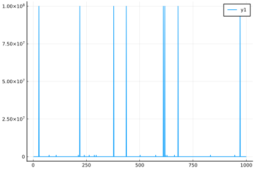
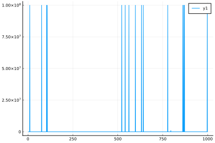

How to write a customized environment?
The first step to apply algorithms in ReinforcementLearning.jl is to define the problem you want to solve in a recognizable way. Here we'll demonstrate how to write many different kinds of environments based on interfaces defined in ReinforcementLearningBase.jl.
The most commonly used interfaces to describe reinforcement learning tasks is OpenAI/Gym. Inspired by it, we expand those interfaces a little to utilize multiple-dispatch in Julia and to cover multi-agent environments.
The Minimal Interfaces to Implement
Many interfaces in ReinforcementLearningBase.jl have a default implementation. So in most cases, you only need to implement the following functions to define a customized environment:
action_space(env::YourEnv)
state(env::YourEnv)
state_space(env::YourEnv)
reward(env::YourEnv)
is_terminated(env::YourEnv)
reset!(env::YourEnv)
act!(env::YourEnv, action)An Example: The LotteryEnv
Here we use an example introduced in Monte Carlo Tree Search: A Tutorial to demonstrate how to write a simple environment.
The game is defined like this: assume you have $10 in your pocket, and you are faced with the following three choices:
- Buy a PowerRich lottery ticket (win $100M w.p. 0.01; nothing otherwise);
- Buy a MegaHaul lottery ticket (win $1M w.p. 0.05; nothing otherwise);
- Do not buy a lottery ticket.
This game is a one-shot game. It terminates immediately after taking an action and a reward is received. First we define a concrete subtype of AbstractEnv named LotteryEnv:
julia> using ReinforcementLearningjulia> Base.@kwdef mutable struct LotteryEnv <: AbstractEnv reward::Union{Nothing, Int} = nothing endMain.LotteryEnv
The LotteryEnv has only one field named reward, by default it is initialized with nothing. Now let's implement the necessary interfaces:
julia> struct LotteryAction{a} function LotteryAction(a) new{a}() end endjulia> RLBase.action_space(env::LotteryEnv) = LotteryAction.([:PowerRich, :MegaHaul, nothing])
Here RLBase is just an alias for ReinforcementLearningBase.
julia> RLBase.reward(env::LotteryEnv) = env.rewardjulia> RLBase.state(env::LotteryEnv, ::Observation, ::DefaultPlayer) = !isnothing(env.reward)julia> RLBase.state_space(env::LotteryEnv) = [false, true]julia> RLBase.is_terminated(env::LotteryEnv) = !isnothing(env.reward)julia> RLBase.reset!(env::LotteryEnv) = env.reward = nothing
Because the lottery game is just a simple one-shot game. If the reward is nothing then the game is not started yet and we say the game is in state false, otherwise the game is terminated and the state is true. So the result of state_space(env) describes the possible states of this environment. By reset! the game, we simply assign the reward with nothing, meaning that it's in the initial state again.
The only left one is to implement the game logic:
julia> function RLBase.act!(x::LotteryEnv, action) if action == LotteryAction(:PowerRich) x.reward = rand() < 0.01 ? 100_000_000 : -10 elseif action == LotteryAction(:MegaHaul) x.reward = rand() < 0.05 ? 1_000_000 : -10 elseif action == LotteryAction(nothing) x.reward = 0 else @error "unknown action of $action" end end
Test Your Environment
A method named RLBase.test_runnable! is provided to rollout several simulations and see whether the environment we defined is functional.
julia> env = LotteryEnv()# LotteryEnv ## Traits | Trait Type | Value | |:----------------- | ----------------------:| | NumAgentStyle | SingleAgent() | | DynamicStyle | Sequential() | | InformationStyle | ImperfectInformation() | | ChanceStyle | Stochastic() | | RewardStyle | StepReward() | | UtilityStyle | GeneralSum() | | ActionStyle | MinimalActionSet() | | StateStyle | Observation{Any}() | | DefaultStateStyle | Observation{Any}() | | EpisodeStyle | Episodic() | ## Is Environment Terminated? No ## State Space `Bool[0, 1]` ## Action Space `Main.LotteryAction[Main.LotteryAction{:PowerRich}(), Main.LotteryAction{:MegaHaul}(), Main.LotteryAction{nothing}()]` ## Current State ``` false ```julia> RLBase.test_runnable!(env)Test Summary: | Pass Total Time random policy with LotteryEnv | 2000 2000 0.1s Test.DefaultTestSet("random policy with LotteryEnv", Any[], 2000, false, false, true, 1.734480506124401e9, 1.734480506233703e9, false, "/home/runner/work/ReinforcementLearning.jl/ReinforcementLearning.jl/src/ReinforcementLearningBase/src/base.jl")
It is a simple smell test which works like this:
n_episode = 10
for _ in 1:n_episode
reset!(env)
while !is_terminated(env)
action = rand(action_space(env))
act!(env, action)
end
endOne step further is to test that other components in ReinforcementLearning.jl also work. Similar to the test above, let's try the RandomPolicy first:
julia> run(RandomPolicy(action_space(env)), env, StopAfterNEpisodes(1_000))EmptyHook()
If no error shows up, then it means our environment at least works with the RandomPolicy üéâüéâüéâ. Next, we can add a hook to collect the reward in each episode to see the performance of the RandomPolicy.
julia> hook = TotalRewardPerEpisode()TotalRewardPerEpisode{Val{true}, Float64}(Float64[], 0.0, true)julia> run(RandomPolicy(action_space(env)), env, StopAfterNEpisodes(1_000), hook)TotalRewardPerEpisode{Val{true}, Float64}([-10.0, -10.0, -10.0, -10.0, 0.0, -10.0, -10.0, -10.0, -10.0, -10.0 … -10.0, 0.0, -10.0, -10.0, -10.0, 0.0, -10.0, 0.0, 0.0, -10.0], 0.0, true)julia> using Plotsjulia> plot(hook.rewards)Plot{Plots.PyPlotBackend() n=1}

Add an Environment Wrapper
Now suppose we'd like to use a tabular based monte carlo method to estimate the state-action value.
julia> p = QBasedPolicy( learner = TDLearner( TabularQApproximator( n_state = length(state_space(env)), n_action = length(action_space(env)), ), :SARS ), explorer = EpsilonGreedyExplorer(0.1) )QBasedPolicy{TDLearner{:SARS, TabularQApproximator{Matrix{Float64}}}, EpsilonGreedyExplorer{:linear, false, Random.TaskLocalRNG}}(TDLearner{:SARS, TabularQApproximator{Matrix{Float64}}}(TabularQApproximator{Matrix{Float64}}([0.0 0.0; 0.0 0.0; 0.0 0.0]), 1.0, 0.01, 0), EpsilonGreedyExplorer{:linear, false, Random.TaskLocalRNG}(0.1, 1.0, 0, 0, 1, Random.TaskLocalRNG()))julia> plan!(p, env)ERROR: MethodError: no method matching forward(::TDLearner{:SARS, TabularQApproximator{Matrix{Float64}}}, ::Bool) The function `forward` exists, but no method is defined for this combination of argument types. Closest candidates are: forward(::FluxApproximator, ::Any...; kwargs...) @ ReinforcementLearningCore ~/work/ReinforcementLearning.jl/ReinforcementLearning.jl/src/ReinforcementLearningCore/src/policies/learners/flux_approximator.jl:43 forward(::L, ::E) where {L<:AbstractLearner, E<:AbstractEnv} @ ReinforcementLearningCore ~/work/ReinforcementLearning.jl/ReinforcementLearning.jl/src/ReinforcementLearningCore/src/policies/learners/abstract_learner.jl:15 forward(::TabularApproximator{R}, ::I) where {R<:AbstractArray, I} @ ReinforcementLearningCore ~/work/ReinforcementLearning.jl/ReinforcementLearning.jl/src/ReinforcementLearningCore/src/policies/learners/tabular_approximator.jl:45 ...
Oops, we get an error here. So what does it mean?
Before answering this question, let's spend some time on understanding the policy we defined above. A QBasedPolicy contains two parts: a learner and an explorer. The learner learn the state-action value function (aka Q function) during interactions with the env. The explorer is used to select an action based on the Q value returned by the learner. Inside of the TDLearner, a TabularQApproximator is used to estimate the Q value.
That's the problem! A TabularQApproximator only accepts states of type Int.
julia> RLCore.forward(p.learner.approximator, 1, 1) # Q(s, a)0.0julia> RLCore.forward(p.learner.approximator, 1) # [Q(s, a) for a in action_space(env)]3-element view(::Matrix{Float64}, :, 1) with eltype Float64: 0.0 0.0 0.0julia> RLCore.forward(p.learner.approximator, false)ERROR: ArgumentError: invalid index: false of type Bool
OK, now we know where the problem is. But how to fix it?
An initial idea is to rewrite the RLBase.state(env::LotteryEnv, ::Observation, ::DefaultPlayer) function to force it return an Int. That's workable. But in some cases, we may be using environments written by others and it's not very easy to modify the code directly. Fortunatelly, some environment wrappers are provided to help us transform the environment.
julia> wrapped_env = ActionTransformedEnv( StateTransformedEnv( env; state_mapping=s -> s ? 1 : 2, state_space_mapping = _ -> Base.OneTo(2) ); action_mapping = i -> action_space(env)[i], action_space_mapping = _ -> Base.OneTo(3), )# LotteryEnv |> StateTransformedEnv |> ActionTransformedEnv ## Traits | Trait Type | Value | |:----------------- | ----------------------:| | NumAgentStyle | SingleAgent() | | DynamicStyle | Sequential() | | InformationStyle | ImperfectInformation() | | ChanceStyle | Stochastic() | | RewardStyle | StepReward() | | UtilityStyle | GeneralSum() | | ActionStyle | MinimalActionSet() | | StateStyle | Observation{Any}() | | DefaultStateStyle | Observation{Any}() | | EpisodeStyle | Episodic() | ## Is Environment Terminated? Yes ## State Space `Base.OneTo(2)` ## Action Space `Base.OneTo(3)` ## Current State ``` 1 ```julia> plan!(p, wrapped_env)1
Nice job! Now we are ready to run the experiment:
julia> h = TotalRewardPerEpisode()TotalRewardPerEpisode{Val{true}, Float64}(Float64[], 0.0, true)julia> run(p, wrapped_env, StopAfterNEpisodes(1_000), h)TotalRewardPerEpisode{Val{true}, Float64}([-10.0, -10.0, -10.0, -10.0, -10.0, -10.0, -10.0, -10.0, -10.0, 1.0e8 … -10.0, -10.0, -10.0, -10.0, -10.0, -10.0, -10.0, 1.0e8, -10.0, -10.0], 0.0, true)julia> plot(h.rewards)Plot{Plots.PyPlotBackend() n=1}

If you are observant enough, you'll find that our policy is not updating at all!!! Actually, it's running in the actor mode. To update the policy, remember to wrap it in an Agent.
More Complicated Environments
The above LotteryEnv is quite simple. Many environments we are interested in fall in the same category. Beyond that, there're still many other kinds of environments. You may take a glimpse at the Built-in Environments to see how many different types of environments are supported.
To distinguish different kinds of environments, some common traits are defined in ReinforcementLearningBase.jl. Now let's explain them one-by-one.
StateStyle
In the above LotteryEnv, state(env::LotteryEnv) simply returns a boolean. But in some other environments, the function name state may be kind of vague. People from different background often talk about the same thing with different names. You may be interested in this discussion: What is the difference between an observation and a state in reinforcement learning? To avoid confusion when executing state(env), the environment designer can explicitly define state(::AbstractStateStyle, env::YourEnv). So that users can fetch necessary information on demand. Following are some built-in state styles:
julia> using InteractiveUtilsjulia> subtypes(RLBase.AbstractStateStyle)4-element Vector{Any}: GoalState InformationSet InternalState Observation
Note that every state style may have many different representations, String, Array, Graph and so on. All the above state styles can accept a data type as parameter. For example:
julia> RLBase.state(::Observation{String}, env::LotteryEnv) = is_terminated(env) ? "Game Over" : "Game Start"
For environments which support many different kinds of states, developers should specify all the supported state styles. For example:
julia> tp = TigerProblemEnv();julia> StateStyle(tp)(Observation{Int64}(), InternalState{Int64}())julia> state(tp, Observation{Int64}())1julia> state(tp, InternalState{Int64}())2julia> state(tp)1
DefaultStateStyle
The DefaultStateStyle trait returns the first element in the result of StateStyle by default.
For algorithm developers, they usually don't care about the state style. They can assume that the default state style is always well defined and simply call state(env) to get the right representation. So for environments of many different representations, state(env) will be dispatched to state(DefaultStateStyle(env), env). And we can use the DefaultStateStyleEnv wrapper to override the pre-defined DefaultStateStyle(::YourEnv).
RewardStyle
For games like Chess, Go or many card game, we only get the reward at the end of an game. We say this kind of games is of TerminalReward, otherwise we define it as StepReward. Actually the TerminalReward is a special case of StepReward (for non-terminal steps, the reward is 0). The reason we still want to distinguish these two cases is that, for some algorithms there may be a more efficient implementation for TerminalReward style games.
julia> RewardStyle(tp)StepReward()julia> RewardStyle(MontyHallEnv())TerminalReward()
ActionStyle
For some environments, the valid actions in each step may be different. We call this kind of environments are of FullActionSet. Otherwise, we say the environment is of MinimalActionSet. A typical built-in environment with FullActionSet is the TicTacToeEnv. Two extra methods must be implemented:
julia> ttt = TicTacToeEnv();julia> ActionStyle(ttt)FullActionSet()julia> legal_action_space(ttt)9-element Vector{Int64}: 1 2 3 4 5 6 7 8 9julia> legal_action_space_mask(ttt)9-element BitVector: 1 1 1 1 1 1 1 1 1
For some simple environments, we can simply use a Tuple or a Vector to describe the action space. Sometimes, the action space is not easy to be described by some built in data structures. In that case, you can defined a customized one with the following interfaces implemented:
Base.inRandom.rand
For example, to define an action space on the N dimensional simplex:
julia> using Randomjulia> struct SimplexSpace n::Int endjulia> function Base.in(x::AbstractVector, s::SimplexSpace) length(x) == s.n && all(>=(0), x) && isapprox(1, sum(x)) endjulia> function Random.rand(rng::AbstractRNG, s::SimplexSpace) x = rand(rng, s.n) x ./= sum(x) x end
NumAgentStyle
In the above LotteryEnv, only one player is involved in the environment. In many board games, usually multiple players are engaged.
julia> NumAgentStyle(env)SingleAgent()julia> NumAgentStyle(ttt)MultiAgent{2}()
For multi-agent environments, some new APIs are introduced. The meaning of some APIs we've seen are also extended. First, multi-agent environment developers must implement players to distinguish different players.
julia> players(ttt)(Player(:Cross), Player(:Nought))julia> current_player(ttt)Player(:Cross)
| Single Agent | Multi-Agent |
|---|---|
state(env) | state(env, player) |
reward(env) | reward(env, player) |
env(action) | env(action, player) |
action_space(env) | action_space(env, player) |
state_space(env) | state_space(env, player) |
is_terminated(env) | is_terminated(env, player) |
Note that the APIs in single agent is still valid, only that they all fall back to the perspective from the current_player(env).
UtilityStyle
In multi-agent environments, sometimes the sum of rewards from all players are always 0. We call the UtilityStyle of these environments ZeroSum. ZeroSum is a special case of ConstantSum. In cooperative games, the reward of each player are the same. In this case, they are called IdenticalUtility. Other cases fall back to GeneralSum.
InformationStyle
If all players can see the same state, then we say the InformationStyle of these environments are of PerfectInformation. They are a special case of ImperfectInformation environments.
DynamicStyle
All the environments we've seen so far were of Sequential style, meaning that at each step, only ONE player was allowed to take an action. Alternatively there are Simultaneous environments, where all the players take actions simultaneously without seeing each other's action in advance. Simultaneous environments must take a collection of actions from different players as input.
julia> rps = RockPaperScissorsEnv();julia> action_space(rps)(('üíé', 'üíé'), ('üíé', 'üìÉ'), ('üíé', '‚úÇ'), ('üìÉ', 'üíé'), ('üìÉ', 'üìÉ'), ('üìÉ', '‚úÇ'), ('‚úÇ', 'üíé'), ('‚úÇ', 'üìÉ'), ('‚úÇ', '‚úÇ'))julia> action = plan!(RandomPolicy(), rps)('üíé', 'üíé')julia> act!(rps, action)true
ChanceStyle
If there's no rng in the environment, everything is deterministic after taking each action, then we call the ChanceStyle of these environments are of Deterministic. Otherwise, we call them Stochastic, which is the default return value. One special case is that, in Extensive Form Games, a chance node is involved. And the action probability of this special player is determined. We define the ChanceStyle of these environments as EXPLICIT_STOCHASTIC. For these environments, we need to have the following methods defined:
julia> kp = KuhnPokerEnv();julia> chance_player(kp)ChancePlayer()julia> prob(kp, chance_player(kp))3-element Vector{Float64}: 0.3333333333333333 0.3333333333333333 0.3333333333333333julia> chance_player(kp) in players(kp)true
To explicitly specify the chance style of your custom environment, you can provide a specific dispatch of ChanceStyle for your custom environment.
Examples
Finally we've gone through all the details you need to know for how to write a customized environment. You're encouraged to take a look at the examples provided in ReinforcementLearningEnvironments.jl. Feel free to create an issue there if you're still not sure how to describe your problem with the interfaces defined in this package.